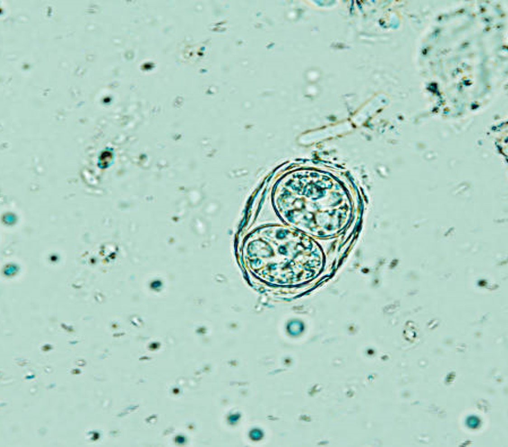
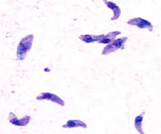
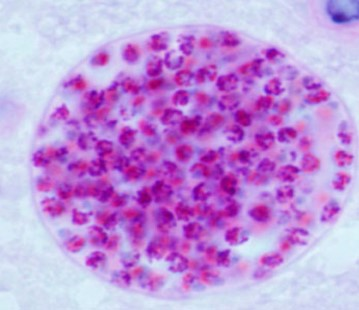

Uma Proposta de Sistema de Informação para Educação Sanitária
A toxoplasmose é uma doença com distribuição geográfica mundial, sendo considerada uma zoonose (transmitida entre seres humanos e animais).
No entanto, poucas pessoas sabem que esta é uma doença transmitida, na maioria das vezes, por meio do consumo de alimentos e até água contaminadas com parasitas,
pois existe muita desinformação a respeito da sua transmissão. Pensando nisto, neste site você vai encontrar informações relevantes à respeito desta doença tão séria.
Para obter mais informações, clique nos ícones abaixo:
É uma zoonose de distribuição mundial, que acomete seres humanos e diversos animais,
sendo o gato o hospedeiro definitivo do Toxoplasma gondii, o protozoário causador da doença.
Este parasita possui 3 formas principais: bradizoítos, taquizoítos e bradizoítos
arraste ao lado para saber mais informações

Oocisto
Forma eliminada nas fezes dos felinos, contaminando solo, água e alimentos.

Taquizoíto
Forma de rápida multiplicação, associada à fase aguda da infecção.

Bradizoíto
Forma presente em cistos nos tecidos, podendo permanecer no organismo por longos períodos.
Como se transmite?
A transmissão da toxoplasmose pode ocorrer de diferentes formas:
Consumo de carne crua ou mal passada contendo cistos do parasita;
Ingestão de alimentos ou água contaminados com oocistos do Toxoplasma gondii;
Consumo de frutas, verduras e legumes mal higienizados;
Transmissão congênita (da mãe para o bebê durante a gestação);
Transmissão congênita (da mãe para o bebê durante a gestação);
Consumo de carne crua ou malcozida contendo cistos do parasita;
Contato com solo contaminado.
Acariciar gatos não transmite toxoplasmose.
Sintomas
Na maioria dos casos, a toxoplasmose é assintomática em indivíduos imunocompetentes. No entanto, quando presentes, os sintomas podem incluir:
Febre;
Fadiga;
Dor de cabeça;
Dores musculares;
Gânglios linfáticos inchados;
Em gestantes
Aborto;
Má formação fetal;
Prevenção
Para prevenir a toxoplasmose, é importante adotar as seguintes medidas:
Lavar bem as mãos após manusear carne crua ou trabalhar no jardim;
Cozinhar bem a carne antes do consumo;
Lavar frutas e vegetais antes de consumi-los;
Evitar o consumo de água não tratada;
Manter a caixa de areia do gato limpa e evitar o contato direto com fezes de gatos;
Orientações
É fundamental que mulheres grávidas e indivíduos imunocomprometidos tomem precauções adicionais para evitar a infecção por Toxoplasma gondii, devido ao risco aumentado de complicações graves. Consultar um profissional de saúde para orientações específicas é recomendado.